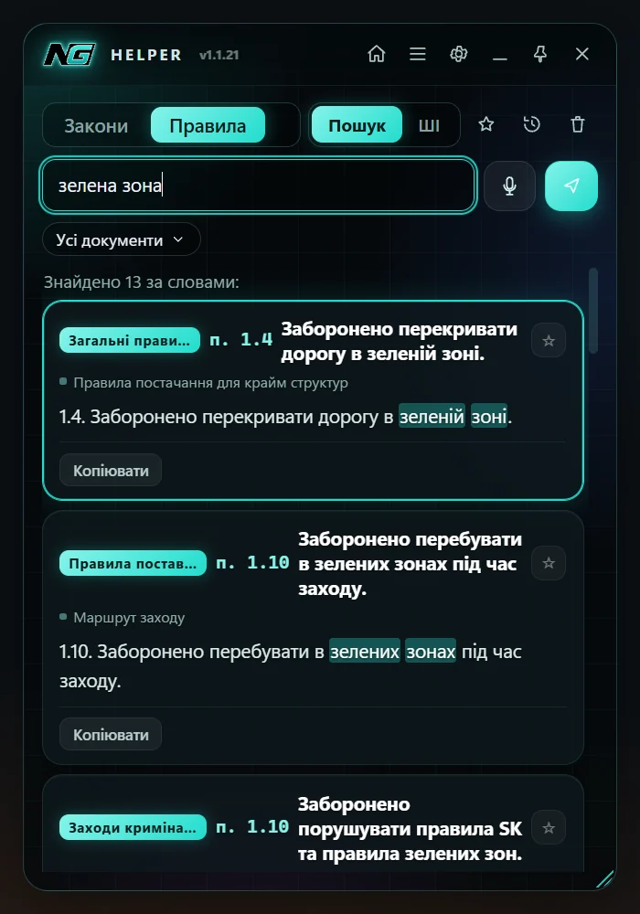
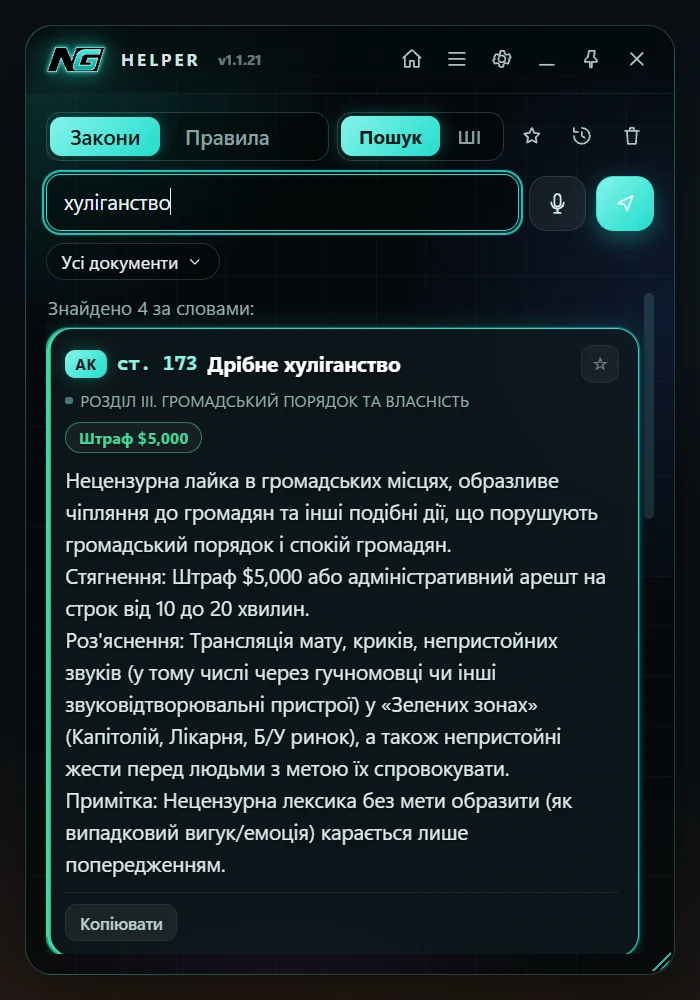
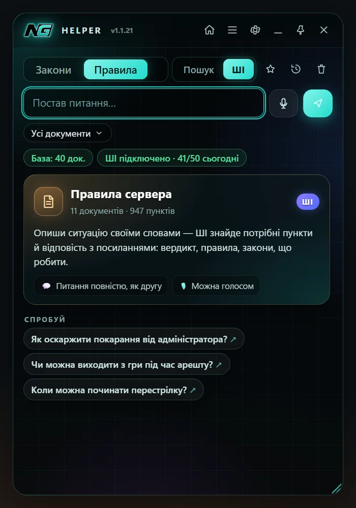
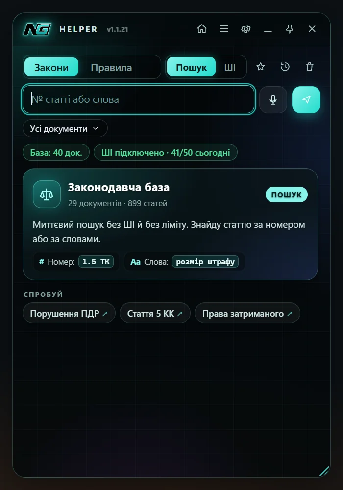
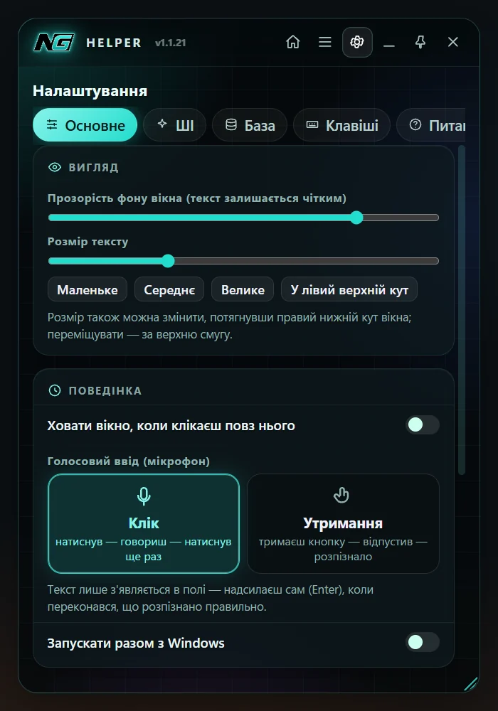

Знайди статтю за секунду, спитай ШІ своїми словами й тримай вікно поверх GTA — не виходячи з гри. Уся законодавча база й правила сервера завжди актуальні.



Без вкладок браузера й пошуку по форуму. Одна клавіша — і потрібна стаття перед очима.
Конституція, кодекси й закони штату NG — підтягуються з сайту сервера самі.
Загальні правила, держ. організації, крайм, лідери, допити, поставки й рейди.
За номером 1.5 ТК або словами — без ШІ, без ліміту, з підсвіткою збігів.
Опиши ситуацію своїми словами — отримаєш вердикт і посилання на статті.
Натиснув, сказав — текст уже в полі. Зручно, коли руки на клавіатурі в грі.
Вікно закріплюється поверх GTA, кліки проходять крізь нього — гра не втрачає фокус.
Helper сам стежить за сайтом і показує «було → стало» та сповіщення Windows.
OBS і Discord не бачать вікно Helper — на стрімі тільки гра.
ШІ спершу знаходить потрібні статті й пункти, а потім відповідає строго за ними. Жодних вигадок і питань у відповідь.
Натисни «Завантажити» й запусти NG-Helper-Setup.exe. Встановлення займає кілька секунд.
Закони й правила завантажаться з ng-gta5.com самі — без входу в акаунт і без пароля.
Ctrl+Alt+N — показати вікно, Ctrl+Alt+P — закріпити поверх гри.
Кожну клавішу можна змінити в Налаштування → Клавіші.


Ні. NG Helper — окрема програма-довідник: вона не втручається в гру, не читає її пам'ять і нічого не змінює в GTA. Це як відкрити сайт із законами, тільки зручніше.
Так. Пошук — без обмежень. ШІ — безкоштовний денний ліміт запитів, він видно в рядку статусу й щодня оновлюється.
Ні. Helper сам завантажує закони й правила з сайту — без входу, логіна й пароля.
Перемкни GTA в режим «У вікні без рамки» (Borderless). Якщо гаряча клавіша не працює — її могла зайняти інша програма (Discord, NVIDIA, OBS): зміни її в Налаштування → Клавіші.
Нічого робити не треба — Helper сам запропонує оновитися, коли вийде нова версія.